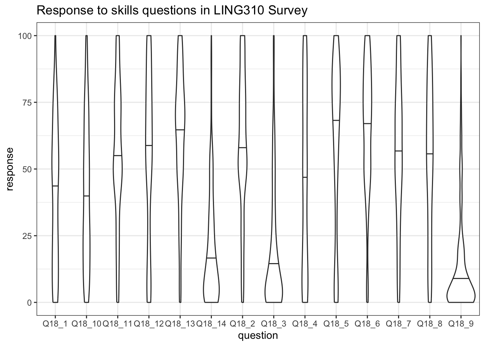
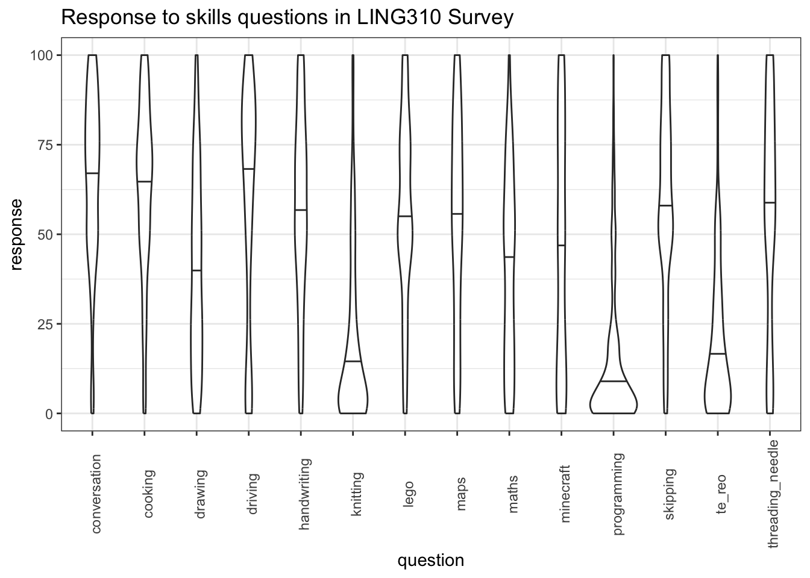
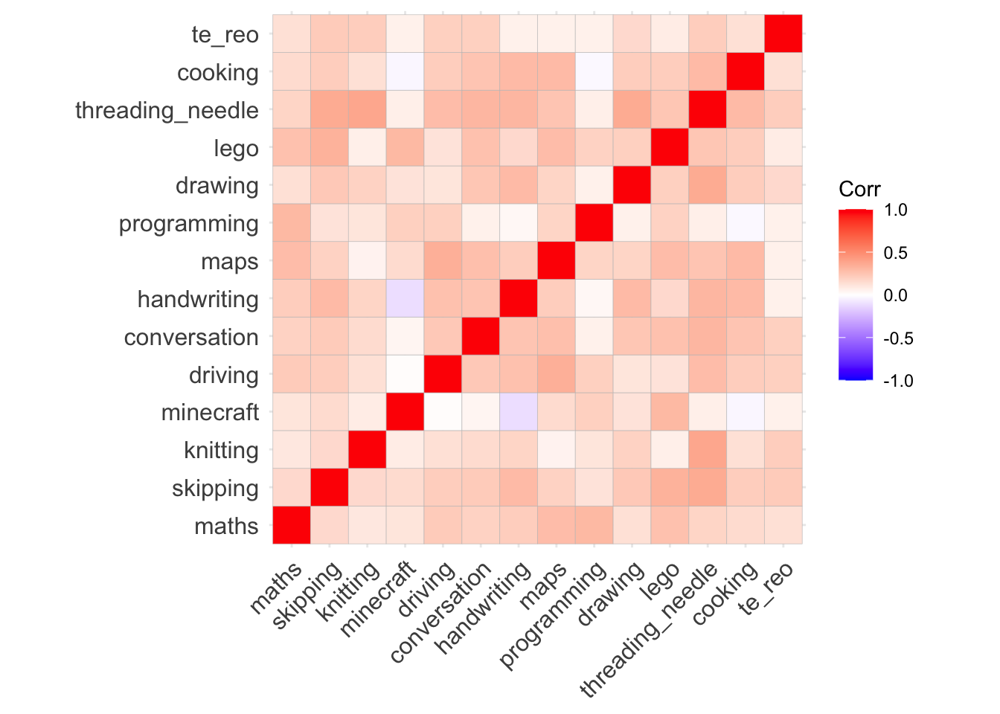

library(tidyverse)
library(here)
library(ggcorrplot)
# The following code changes the ggplot theme. You may like to explore
# alternative themes.
theme_set(theme_bw())4 Loading Data from Qualtrics
Note
This section has been written to feed in to LING615 - World Englishes and takes advantage of some material prepared for LING310.
It is not a full introduction to analysis of survey data in Qualtrics nor is it an adequate introduction to statistical testing!
To interact with data from Qualtrics, we will use the package qualtRics.
If you haven’t installed the package, run install.packages('qualtRics') in the R console.
Note
This book will have details about creating an R project soon. For now, follow the check list below and if you want more detail see https://r4ds.had.co.nz/workflow-projects.html.
4.1 Set up an R Project
To set up a new R project:
- Go to
File > New Project - Select ‘New Directory’ and then ‘New Project’
- Use the
browsechoose a directory for the project (you might have to create a new one). For instance,Documents/linguistics_projects/then enter a name for the project directory in theDirectory namebox. - Press
Create Project. - Create two directories in the project directory:
datascripts
We will look at how to load data from .csv files generated by Qualtrics.
Place the .csv file you want to use in the data directory. For this exercise we will use this csv.
Create an R script and save it in the scripts directory.
4.2 Load Useful Libraries
Start the script with the following lines:
If R says that a package is not found, install it using install.packages(). Simply enter the name of the package inside quotation marks inside the brackets. For instant, if you don’t have the ggcorrplot package, enter the following in the R console (the bottom pane in RStudio): install.packages('ggcorrplot')
4.3 Load Data Exported from Qualtrics with read_survey()
We can now use the read_survey function from the qualtRics package to read in the data.
# load the qualtRics package
library(qualtRics)
# Read in the data
survey <- read_survey(here('data', 'Ling310-Week1-2022.csv')) Running the above line of code will both read in the data (giving it the name survey in R) and provide output which tells us how the columns have been interpreted. The output shows that the default is to assume that each column has text in it rather than numbers (see .default = col_character() in the output). We also see that the Progress, Duration (in seconds), and latitude and longitude columns contain numbers (see col_double() in the output — ‘double’ refers to a way in which computer represent numbers which can contain a decimal point). Finally, there are a set of columns with the type col_logical(). These columns are ‘logical’ in the sense that they contain only TRUE or FALSE. Any of these columns can have NA, which indicates that data is missing or unavailable.
You may be confused now! Why would a column called RecipientLastName, for instance, only have the values TRUE or FALSE? Shouldn’t it have… the last names of recipients? There must be something wrong here. Let’s figure it out.
It is worth having a look at some rows from the columns we are worried about. There are only 17 rows in the data frame so we can easily look at all of the values in the confusing columns.1 Here is some tidyverse style code to do that:
survey |>
# Select the 'logical' columns which are confusing.
select(
RecipientLastName,
RecipientFirstName,
RecipientEmail,
ExternalReference
)# A tibble: 17 × 4
RecipientLastName RecipientFirstName RecipientEmail ExternalReference
<lgl> <lgl> <lgl> <lgl>
1 NA NA NA NA
2 NA NA NA NA
3 NA NA NA NA
4 NA NA NA NA
5 NA NA NA NA
6 NA NA NA NA
7 NA NA NA NA
8 NA NA NA NA
9 NA NA NA NA
10 NA NA NA NA
11 NA NA NA NA
12 NA NA NA NA
13 NA NA NA NA
14 NA NA NA NA
15 NA NA NA NA
16 NA NA NA NA
17 NA NA NA NA All 17 rows have NA values. That is, there is no data in these columns. We could just ignore these columns or we can get rid of them. Either option is fine. Here’s one way to get rid of them, using select() again, but this time with a minus sign (-) to indicate that we don’t want the named columns.
survey <- survey |>
select(
-RecipientLastName,
-RecipientFirstName,
-RecipientEmail,
-ExternalReference
)What is actually in this data? Let’s look at the first few entries. If you simply enter survey we see the following:
survey# A tibble: 17 × 36
StartDate EndDate Progress Duration (in seconds…¹ Finished RecordedDate
<chr> <chr> <dbl> <dbl> <lgl> <chr>
1 18/07/2022 1:27 18/07/… 100 339 TRUE 18/07/2022 …
2 19/07/2022 0:13 19/07/… 100 570 TRUE 19/07/2022 …
3 19/07/2022 0:35 19/07/… 100 251 TRUE 19/07/2022 …
4 19/07/2022 20:… 19/07/… 100 277 TRUE 19/07/2022 …
5 19/07/2022 21:… 19/07/… 100 265 TRUE 19/07/2022 …
6 20/07/2022 20:… 20/07/… 100 343 TRUE 20/07/2022 …
7 20/07/2022 21:… 20/07/… 100 390 TRUE 20/07/2022 …
8 20/07/2022 21:… 20/07/… 100 328 TRUE 20/07/2022 …
9 21/07/2022 1:58 21/07/… 100 213 TRUE 21/07/2022 …
10 21/07/2022 17:… 21/07/… 100 177 TRUE 21/07/2022 …
11 21/07/2022 19:… 21/07/… 100 497 TRUE 21/07/2022 …
12 21/07/2022 19:… 21/07/… 100 213 TRUE 21/07/2022 …
13 21/07/2022 20:… 21/07/… 100 203 TRUE 21/07/2022 …
14 22/07/2022 22:… 22/07/… 100 280 TRUE 22/07/2022 …
15 24/07/2022 21:… 24/07/… 100 639 TRUE 24/07/2022 …
16 25/07/2022 19:… 25/07/… 100 91 TRUE 25/07/2022 …
17 28/07/2022 20:… 28/07/… 100 159 TRUE 28/07/2022 …
# ℹ abbreviated name: ¹`Duration (in seconds)`
# ℹ 30 more variables: ResponseId <chr>, LocationLatitude <dbl>,
# LocationLongitude <dbl>, DistributionChannel <chr>, UserLanguage <chr>,
# Q3 <chr>, Q4 <chr>, Q5 <chr>, Q6 <chr>, Q8 <chr>, Q9 <chr>, Q10 <chr>,
# Q11 <chr>, Q12 <chr>, Q13 <chr>, Q14 <chr>, Q15 <chr>, Q16 <chr>,
# Q17 <chr>, Q18 <chr>, Q19 <chr>, Q20 <chr>, Q21 <chr>, Q22 <chr>,
# Q23 <chr>, Q24 <chr>, Q25 <chr>, Q26 <chr>, Q27 <chr>, Q28 <chr>This doesn’t tell us much, because there are so many columns. How many? Look at the top left of the output: there are 17 rows and 40 columns (17 x 40). We see when the participant started and ended the survey, how far through they got (Progress), how long it took (`Duration (in seconds)`), and whether the participant finished (Finished).
Have a look at the full data set in RStudio’s viewer by either clicking on the name survey in the environment pane (top right) or entering View(survey) in the console. There are a series of columns, one for each question. When we view in the RStudio viewer we see the text of survey question as ‘labels’ underneath the variable names (e.g. the variable named Q23 has the label ‘Does “pool” rhyme with “food”?’).
The other way to get at these labels is to use the function sjlabelled::get_label(). This will output the text label for each variable. The bit of code [15:20] tells R just to print the 30th label through to the 35th. You can change these numbers to see more labels or remove them entirely to see all of the labels.
sjlabelled::get_label(survey)[30:35] Q22
"Does 'pear' rhyme with 'share'?"
Q23
"Does \"pool\" rhyme with \"food\"?"
Q24
"Are 'doll' and 'dole' pronounced the same?"
Q25
"Do you think Aucklanders sound different from people from Christchurch?"
Q26
"Do you think you could guess whether someone is Māori or Pākeha from listening to them?"
Q27
"Would it be easier to guess someone's age or job from the way they sound?" You may need to scroll right to see the full question and the variable names in the output.
The bit of code sjlabelled:: means that we are looking for a name which exists within the package sjlabelled. You can avoid having to enter this in by loading the library sjlabelled at the start of your script. This is entirely up to you.
What is the label of the variable named
Q25?
Let’s have a look at the actual answers for Q24:
survey$Q24 [1] "No" "Yes" "No" "No" "Yes" "Yes" "Yes" "Yes" "No" "Yes" "Yes" "No"
[13] "No" "Yes" "No" "Yes" "Yes"
attr(,"label")
Q24
"Are 'doll' and 'dole' pronounced the same?" The responses are stored as character strings. Most respondents seem to think that ‘doll’ and ‘dole’ are pronounced the same.
We don’t have to count these manually. Use the following code to see the counts of each answer:
summary(factor(survey$Q24)) No Yes
7 10 There are ten respondents who think ‘Aucklanders and people from Christchurch sound the same and four who don’t ’doll’ and ‘dole’ are pronounced the same.
What do you think the function factor is doing here? See what happens if you remove it and have a look here to understand what is going on in more detail: https://r4ds.hadley.nz/factors.html
4.4 A Bar Chart
Let’s create some plots in ggplot using the data we have loaded from Qualtrics.
survey |>
ggplot(
aes(
x = Q28
)
) +
geom_bar() +
labs(
title = "Q28",
subtitle = "What does the word 'worry' rhyme with?"
)
4.5 Factor Associations
We are often interested in associations between answers to distinct questions. The table function can be very useful as an initial was of seeing differences. Table is not a tidyverse function, and so we have to use the $ to indicate column names.
table(
survey$Q8,
survey$Q10
)
No Yes
Definitely 5 2
Definitely not 0 3
Maybe? 3 4Figure out what the questions associated with the columns Q8 and Q10 are. Enough information has been given above to work this out.
Are we surprised by the absence of ‘no’ answers in the ‘definitely not’ group? We can do a simple test to check this using a Chi-square test.
survey_test <- chisq.test(
survey$Q8,
survey$Q10
)
survey_test
Pearson's Chi-squared test
data: survey$Q8 and survey$Q10
X-squared = 4.3849, df = 2, p-value = 0.1116Here, a value is calculated which compares the counts in the table above that we would expect given no association between the answers to the two questions, and what we actually observe. This value is called the \(\chi^2\) value (or ‘Chi-square’). The consistency of our data with the assumption that there is no relationship is captured by the \(\chi^2\) value (and the degrees of freedom, but you can ignore this for now). If the p-value is below a pre-established limit, typically \(0.05\), we say that the association between the two questions is ‘statistically significant’. In this case, the association is not statistically significant.
The assumption that there is no association between the questions is called the ‘null hypothesis’.
Warning
It takes some effort to fully understand the meaning of p-values, and of the phrase ‘statistically significant’.
For one thing, ‘statistical significance’ does not mean significant in the sense of ‘big’. Some ‘statistically significant’ effects are so small that they have no practical importance.
This is a bigger topic which we will not cover here!
We can see what values were expected given no association between the questions here:
survey_test$expected survey$Q10
survey$Q8 No Yes
Definitely 3.294118 3.705882
Definitely not 1.411765 1.588235
Maybe? 3.294118 3.705882Failure to find a statistically significant effect does not mean that there is no effect. For instance, even if there is an effect we may not have enough data points to detect it.
It is also important to note that an association between two questions can appear as statistically significant even if it does not exist. The p-value indicates the probability that we would see a \(\chi^2\) value this big (or bigger) in the absence of a genuine association between the answers to the two questions. Any data is consistent with the absence of an association. Perhaps we were just unlucky in our observations.
To report a \(\chi^2\) test, you can say something like: > We carried out a Chi-square test on questions 8 and 10 and failed to reject the null hypothesis (Chi = 4.4, df = 2, p = 0.1).
Or, if the association were statistically significant: > We found a statistically significant association between questions x and y (Chi = ???, df = ???, p = ???).
With the appropriate values inserted.
4.6 Wide and Long Data
One of the most common things to do with survey data is to convert from our current situation, where we have a column for each question to one in which we use two columns: one to identify questions and one to store responses.
That is, we want to move from a wider data frame to a longer data frame. A longer data frame as fewer columns and more rows.
We achieve this using the pivot_longer() function. It is often useful to assign the longer version of the data frame to a new variable.
Let’s import another Qualtrics survey for which this is necessary:
skills <- read_survey(here('data', 'ARTS102-S2-2022.csv'))Have a look at this survey using the skills you have picked up above.
Here is a long, but easier to explain, version of the code which makes this data frame longer:
skills_longer <- skills |>
pivot_longer(
# First we name the columns we want to convert into longer formant.
cols = c(
Q18_1, Q18_2, Q18_3, Q18_4, Q18_5, Q18_6, Q18_7, Q18_8, Q18_9,
Q18_10, Q18_11, Q18_12, Q18_13, Q18_14
),
# Where do we want the column names to go? This will be the name of our new
# column to identify the question.
names_to = "question",
# Where do we want the responses to go?
values_to = "response"
)Let’s look at some ways to make this code a little more convenient to write. There are lots of ways to specify the columns we are interested in rather than writing them all in by hand.
- We can use a colon (
:) to indicate a range of columns. This will use the order in which the columns appear in the data frame (the same as the order in the RStudio viewer or the order you get if you enternames(skills)into the console). So, in this case, we can useQ18_1:Q18_14:
skills_longer <- skills |>
pivot_longer(
cols = Q18_1:Q18_14,
names_to = "question",
values_to = "response"
)- You can select columns using
starts_with()orends_with(), if all the columns you want have names starting with or ending with a given character. All the columns we want start withQand none of the other columns start withQ, we we can use:
survey_longer <- survey |>
pivot_longer(
cols = starts_with('Q'),
names_to = "question",
values_to = "response"
)- We can use
contains()if we have a specific string which each column contains (in this casecontains('Q')would work).
There are some other column selection options. If you want more detail, enter ?tidyselect::language into the console and look at the help file which appears.
4.7 Another Plot
Let’s produce a nice violin plot, which will show the distribution of scores across multiple questions:
skills_v_plot <- skills_longer |>
ggplot(
aes(
x = question,
y = response
)
) +
geom_violin(draw_quantiles = c(0.5)) +
labs(
title = "Response to skills questions in LING310 Survey"
)
skills_v_plot
In the above plot, the bars give the median value for the question. So, for instance, for the first question, the median value is somewhere between \(37.5\) and \(50\), whereas the median for the fourteenth question is somewhere between \(12.5\) and \(25\).
The labels on the \(x\)-axis are not very clear. Let’s fix this! There’s no low-labour way to do this. The names are taken from the column names which we got when we read in the data. So we can modify the skills data frame and then pivot it into longer form again. I get the names by looking at the output of the sjlabelled::get_label() function again.2 We will change the names of the columns using the rename() function.
skills <- skills |>
rename(
maths = Q18_1,
skipping = Q18_2,
knitting = Q18_3,
minecraft = Q18_4,
driving = Q18_5,
conversation = Q18_6,
handwriting = Q18_7,
maps = Q18_8,
programming = Q18_9,
drawing = Q18_10,
lego = Q18_11,
threading_needle = Q18_12,
cooking = Q18_13,
te_reo = Q18_14,
)We pivot again:
skills_longer <- skills |>
pivot_longer(
cols = maths:te_reo,
names_to = "question",
values_to = "response"
)And plot again. We add some lines to rotate the labels so they are readable:
skills_v_plot <- skills_longer |>
ggplot(
aes(
x = question,
y = response
)
) +
geom_violin(draw_quantiles = c(0.5)) +
labs(
title = "Response to skills questions in LING310 Survey"
) +
theme(
axis.text.x = element_text(angle=90, vjust = 0.8)
)
skills_v_plot
There are many ways this could be improved. Have a look for some ggplot2 tutorials online.
4.8 Continuous Associations
Can we look at how these skills are related to one another? Yes!
First, let’s look at a correlation plot:
ggcorrplot(
cor(skills |> select(maths:te_reo))
)
The red blocks indicate positive associations (when one goes up, the other does as well). There is only one negative correlation here, between Minecraft and handwriting. This suggests (weakly!) that increased Minecraft skill comes with weakened handwriting.
On the stronger end, it looks like there is a strong positive correlation between knitting skill and the ability to thread a needle and between reading maps and driving.
We can test all three associations using the cor.test() function. First: between Minecraft and handwriting:
cor.test(
skills$minecraft,
skills$handwriting
)
Pearson's product-moment correlation
data: skills$minecraft and skills$handwriting
t = -1.9122, df = 293, p-value = 0.05683
alternative hypothesis: true correlation is not equal to 0
95 percent confidence interval:
-0.222396789 0.003220217
sample estimates:
cor
-0.1110185 The p-value here is just above 0.05. This is below the cutoff, so we do not say that the association is ‘statistically significant’.
Let’s look at the association between threading a needle and knitting:
cor.test(
skills$knitting,
skills$threading_needle
)
Pearson's product-moment correlation
data: skills$knitting and skills$threading_needle
t = 7.1109, df = 293, p-value = 8.847e-12
alternative hypothesis: true correlation is not equal to 0
95 percent confidence interval:
0.2817856 0.4769410
sample estimates:
cor
0.3836382 This is a much stronger correlation (\(0.383...\)) and has a much lower p-value. It is below \(0.05\), so we can say that the association between the questions is statistically significant. For instance, by saying “the correlation between the skill of threading a needle and knitting is statistically significant at the 0.05 level (Pearson’s cor = \(0.38\), p-value < \(0.001\)).”3
What about the association between driving a car and reading maps:
cor.test(
skills$driving,
skills$maps
)
Pearson's product-moment correlation
data: skills$driving and skills$maps
t = 6.1072, df = 293, p-value = 3.216e-09
alternative hypothesis: true correlation is not equal to 0
95 percent confidence interval:
0.2306929 0.4335966
sample estimates:
cor
0.3360379 The story here is very similar.
Warning
There is much more to be said about statistical testing. In particular, in actual research it is very bad practice to start with a plot of the strength of a series of correlations, pick the strongest ones, and then do a statistical test on them. This can result in many false associations. Rather, you should have a hypothesis about what associations will be significant before you look at the data.
Let’s have a look at what the association between threading a needle and knitting looks like with one final plot:
skills |>
ggplot(
aes(
x = threading_needle,
y = knitting
)
) +
geom_point() +
geom_smooth(method = lm)
Because our values have to be between \(0\) and \(100\), there are ‘floor’ and ‘ceiling’ effects here. That is, many of our values sit at either 0 or 100. Nonetheless, the correlation coefficient gives us a tool for expressing the association between these variables.
There is much more to say about how to analyse data of this sort. However, this is enough to get started with.
You can see how many rows there are in a data frame by looking at the ‘environment’ pane at the top right of the R Studio window. You can also use the function
nrow(). In this case, you could enternrow(survey)into your script or the console pane in RStudio.↩︎You could use any method you like to do this, including looking at the original spreadsheet in Excel.↩︎
Here, because the p-value is so small, we simply report that it is less than a very small number \(0.0001\). It is good practice not to just say \(< 0.05\).↩︎